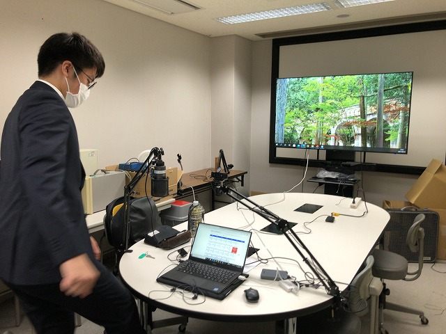

| ・ 混相流シンポジウム2021＠オンライン(関西大学主催) (R03.08.22-24) | |||
混相流シンポジウム2021に「２種類の異なる成層懸濁液混合挙動の可視化計測」という題目で、M1I口さんが発表しました。10分発表、10分質疑となかなか大変な発表です。去年もオンラインで、その前は福岡。やっぱり出張先でワイワイやりたいですね。 |
|||
|
新Fの部屋 |

マイク、カメラ、ディスプレイ準備完了 | ||
|
一息ついて |
そろそろ順番 | ||
|
点呼 |
ネットワークごしでカクカク | ||
|
あー、そういう質問かー |
クールダウン | ||